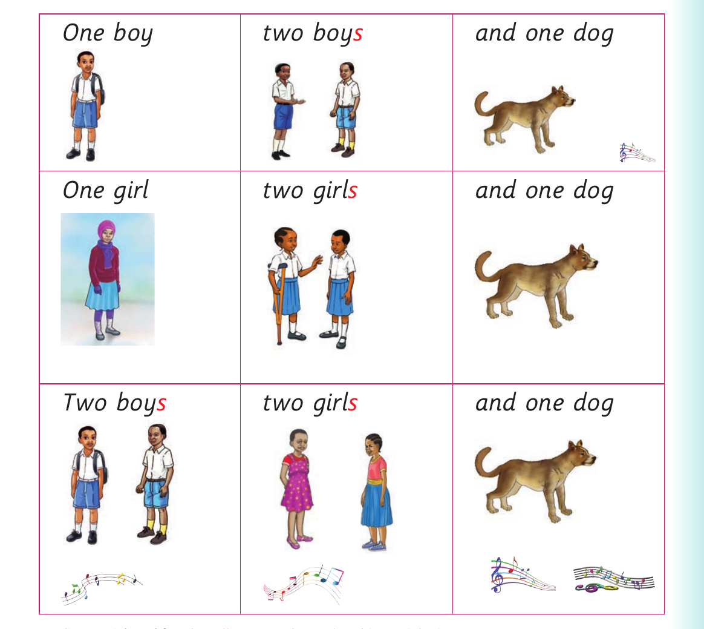

Singular and plural forms - song and dialogue

One boy. Two boys. And one dog. One girl. Two girls. And one dog. Two boys. Two girls. And one dog.
Source: Adopted from https://www.youtube.com/watch?v=rzq9eiYt9Bg
6. Act out the following dialogue:
Ann:Do you like fruits?
Ali:Yes, I do.
Ann:What type of fruits do you like?